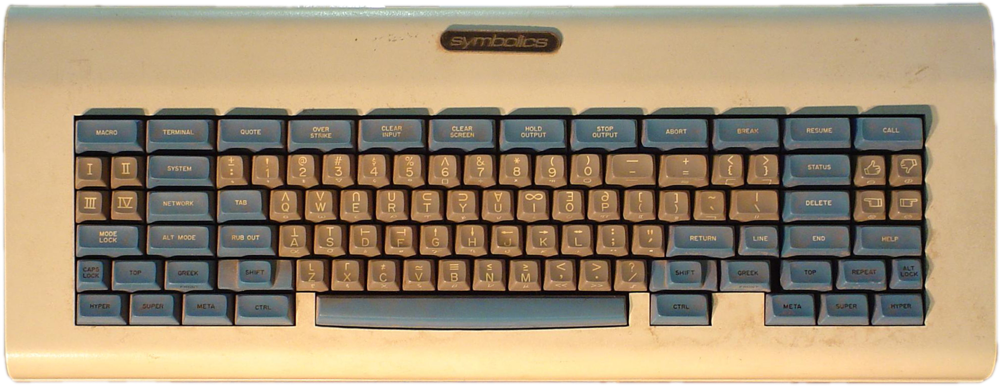
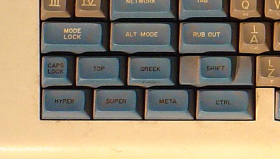
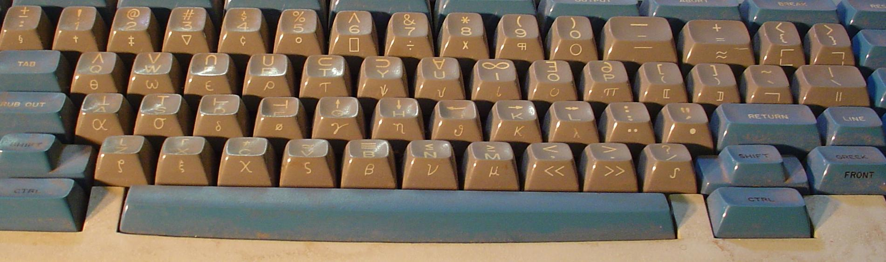
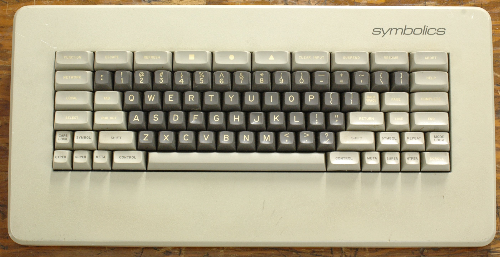

Space-Cadet Keyboard
The MIT Lisp-machine keyboard where chording five modifier bits and three shift levels gives a typist thousands of distinct single-keystroke commands

Overview
The space-cadet keyboard was designed by John L. Kulp in 1978 for the Lisp machines at MIT (the CADR and its Symbolics repackaging, the LM-2). It descended from the earlier Knight keyboard used with MIT's Incompatible Timesharing System. Its defining feature is an extraordinary set of modifiers: four bucky-bit keys (Control, Meta, Super, Hyper) plus three shift keys (Shift, Top, and Front, labeled "Greek" on the top of the keycap). Each group sits in its own row, so a user can press several modifiers with one hand while the other hand presses a regular key.
Many keys carry three symbols — a letter and a symbol on top, a Greek letter on the front — reachable via the shift keys. By combining modifiers, (50 keys × 5 shift types) × 24 bucky-bit combinations yields up to 4,000 different inputs. This let a typist enter complicated mathematical text and gave users thousands of single-character commands. The keyboard also carried a Macro key and four roman-numeral keys (I–IV) for quick menu selection.
Deep dive
The four bucky bits — Control, Meta, Super, Hyper — could be pressed together in chords. Meta had appeared on the Knight keyboard; Hyper and Super were introduced here. Emacs inherited the "M-" notation for Meta, and when Emacs was ported to the PC the Alt key stood in for Meta. The willingness of users to memorise thousands of chording combinations shaped the command-heavy interface of Emacs.
Shift gives uppercase; Front (labeled "Greek") gives a Greek lowercase letter; Top gives a symbol. The G key, for example, yields g / G / γ / Γ / ↑ depending on the shift chord. This made the keyboard a powerful surface for mathematical text and Greek notation long before Unicode.
Some found so many keys excessive and hard to operate, while others embraced the speed of single-keystroke commands. The space-cadet was used on the Symbolics LM-2; later Symbolics systems used a simplified "Symbolics keyboard" retaining the layout and the common modifier keys. The name comes from the "space cadet" trainee-astronaut image — a cockpit-like wall of controls.
Team & pioneers
- John L. Kulp. Designed the space-cadet keyboard in 1978 for MIT Lisp machines.
- MIT Artificial Intelligence Laboratory. Home of the Lisp machine (CADR) on which the space-cadet keyboard was used.
- Symbolics. Used the space-cadet keyboard on the LM-2, its repackaged version of the MIT CADR.
Media


